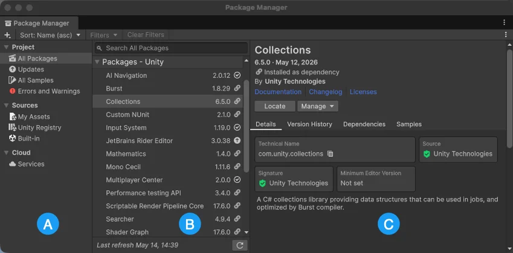

Use the Package Manager’s navigation panel as your starting point to discover most packages or samples.

Select a context from the navigation panel (A) to list those types of packages or samples in the list panel (B). Optionally filter, sort, or search, to narrow the focus of what you’re looking for.
When you select a package or sample from the list panel, its details appear in the details panel (C).
Select the context you want from the navigation panel. You can select from these options:
| Context | Description |
|---|---|
| All Packages | Displays all feature sets and packages installed in your project, including local, git, and embedded packages, and packages installed from any registry. The list also includes any packages from the Asset Store that you added from the My Assets context. |
| Updates | Lists all packages in your project that you can update, including Asset Store packages. Appears only when packages are available to update. |
| All Samples | Lists all samples from the packages installed in your project. The list displays all available samples, not just the ones you imported. |
| Errors and Warnings | Lists all packages in your project that require attention. Appears only when packages have errors or warnings. |
| Unity Registry | Displays all feature sets and packages on the Unity package registry, regardless of whether they’re already installed in your project. This doesn’t include packages installed from any other location or from any scoped registry. |
| My Assets | Displays all Asset Store packagesA bundled collection of assets or tools available for purchase or download on the Unity Asset Store, compressed and stored as an asset package (.unitypackage extension) or a UPM package. You can manage your packages from the Asset Store either on the online store or through the Package Manager window. More infoSee in Glossary that you have purchased using the Unity ID you’re currently logged in with. |
| Built-in | Displays only built-in Unity packages, which represent core Unity features. You can use these packages to turn Unity modules on and off. Tip: You can find out more about what each built-in package (module) implements in the Unity Scripting API. Each module assembly page lists which APIs the built-in package implements. |
| Services | Displays integrated servicesA Unity facility that provides a growing range of complimentary services to help you make games and engage, retain and monetize audiences. More info See in Glossary to help you to engage, retain, and monetize audiences. |
| My Registries | Displays any packages available from any scoped registry installed in this project. This context appears only if you installed a scoped registry in this project. If you installed a scoped registry but it’s not listed in the My Registries context or the My Registries context isn’t available at all, it might be because the package registry server you added doesn’t implement either of the /-/v1/search or /-/all endpoints, which means that it’s not compatible with Unity’s Package Manager. |
Note: If you entered text in the search box or set filters, the list panel displays only packages, samples, and feature sets which match the context, search criteria, and active filters.